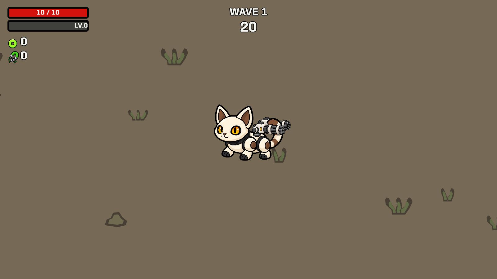
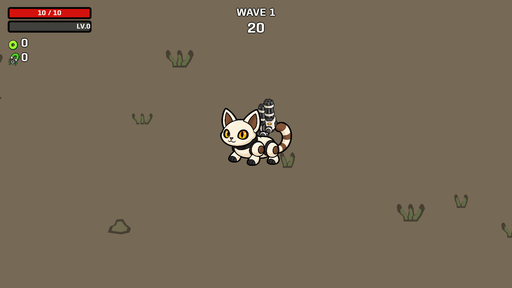
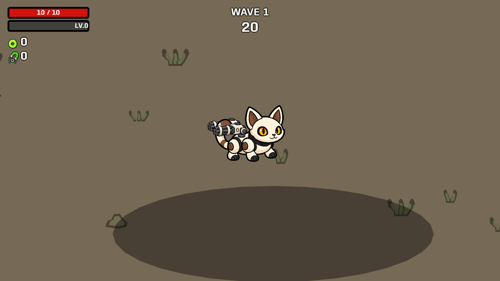
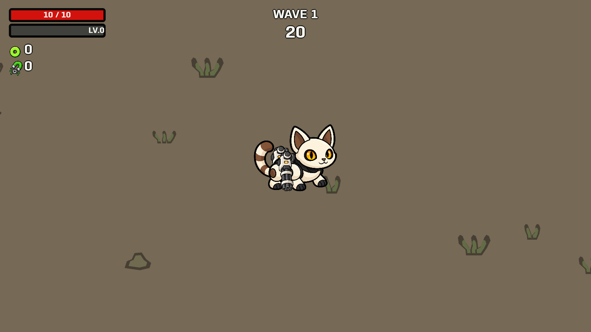

Both guns follow the cat's body, rotate around their rear joints and change front/back drawing order as they turn. The four poses below are staged native game captures.
Launch updated support preview · Reference findings · Native behavior checks



